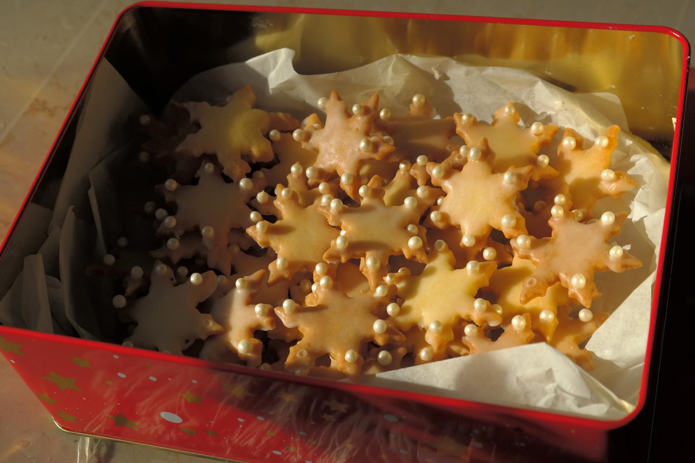

Home
Sugar Cookies Recipe

Description
60 delicious sugar cookies
Ingredients
- 2 cups white sugar
- 1.5 cups butter, softened
- 4 large eggs
- 1 tsp vanilla extract
- 5 cups plain flour
- 2 tsp baking powder
- 1 tsp salt
Steps
-
Beat sugar and softened butter together in a large bowl with an electric
mixer until smooth.
-
Beat in eggs and vanilla. Stir in flour, baking powder, and salt. Cover,
and chill dough for at least 1 hour (or overnight).
-
Preheat the oven to 400 degrees F (200 degrees C). Lightly dust a work
surface with flour. Roll out dough to 1/4 to 1/2 inch thickness.
-
Cut into shapes with any cookie cutter. Place cookies 1 inch apart on
ungreased baking sheets.
-
Bake in the preheated oven until cookies are lightly browned, 6 to 8
minutes. Carefully transfer cookies to a wire rack and cool completely
before decorating.
- Enjoy!